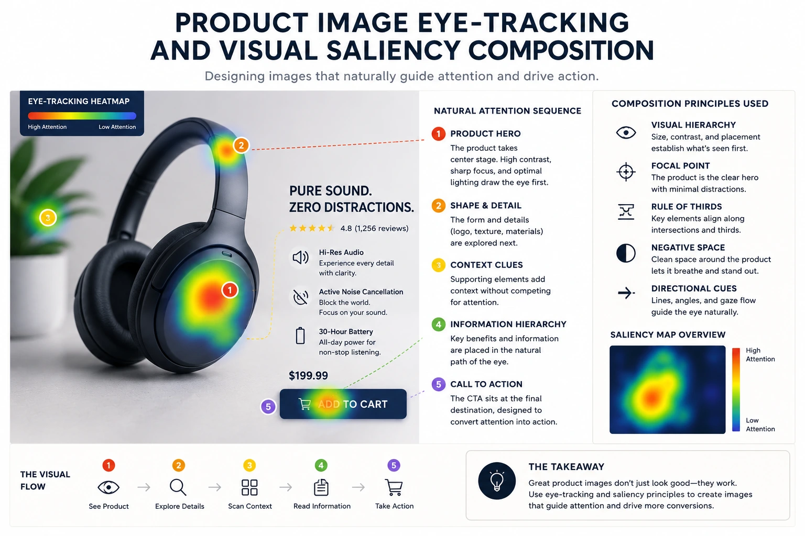
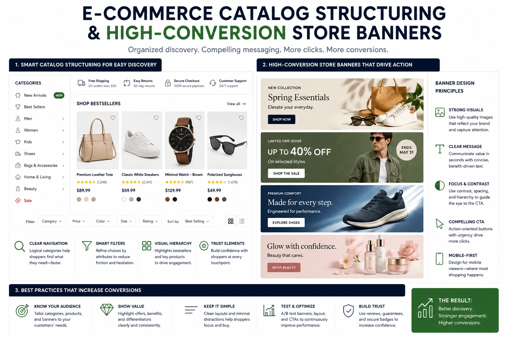

The Science of Structuring Photography to Guide the Buyer's Eyes Directly to the "Add to Cart" Button
The Invisible Architecture of Every Product Page
Every product page has a visual architecture — a specific sequence in which the buyer's eye travels through the page's elements. On most product pages, this architecture is accidental: the hero photograph was composed for aesthetic quality, the price was placed where the template allowed, the Add to Cart button was positioned where the UI designer put it, and the resulting gaze path is the unintended consequence of these independent decisions rather than the engineered outcome of a conversion-focused visual strategy.
On the best-converting product pages, the architecture is intentional. The hero photograph was composed not only for aesthetic quality but for visual saliency directed toward the conversion zone. The image's dominant visual weight, the model's gaze direction, the compositional exit point — all of these were planned to direct the buyer's eye from the hero image to the price to the Add to Cart button in the specific sequence that produces the highest conversion rate.
This is the discipline of visual saliency web photography and product layout conversion architecture — the application of product image eye-tracking research to the specific compositional and placement decisions that make a product page's visual hierarchy work for conversion rather than against it. And it is available to any Indian e-commerce brand willing to brief their photography with conversion architecture in mind, not just aesthetic quality.
How the Eye Actually Moves Through a Product Page
Product image eye-tracking research conducted across e-commerce product pages reveals consistent gaze behaviour patterns that have direct implications for e-commerce catalog structuring and photography composition:
- The hero image captures the first fixation. The buyer's initial gaze lands on the hero product image in the vast majority of cases — not on the headline, not on the price, not on the CTA button. The hero image is the entry point of the gaze path on every product page, regardless of its position in the page layout. This means the hero image is the element that most directly determines the quality and direction of the gaze path that follows.
- Gaze exits the hero image in the direction of its dominant visual vector. When the buyer's eye leaves the hero image, it exits in the direction that the image's dominant visual element is pointing or looking. A model facing right directs gaze rightward on exit. A product angled to the upper right directs gaze upward and rightward on exit. A downward-cast shadow directs gaze downward on exit. This exit direction determines whether the buyer's gaze travels toward the price and CTA — or away from them.
- Faces capture and hold gaze disproportionately. When a model's face is present in a product image, gaze concentrates on the face significantly more than on the product itself — particularly when the model is making direct eye contact with the camera. This face-capture effect can work for or against conversion depending on the model's gaze direction: a model looking at the camera captures gaze on the face and directs it back into the image; a model looking at the product transfers gaze from the face to the product and then exits the image toward the CTA.
- The F-pattern and Z-pattern describe the gaze path below the hero image. After exiting the hero image, the buyer's gaze follows well-documented scanning patterns across the product page's text and UI elements — either an F-pattern (scanning across the top then scanning downward on the left) or a Z-pattern (scanning across the top then diagonally to the lower right, then scanning across the bottom). Both patterns eventually arrive at the CTA — but the page elements that appear along the scan path determine how many of the buyer's evaluation needs are met before the CTA is reached.
Gaze Direction Engineering
Composing the hero image with the product or model positioned to direct gaze rightward and downward — toward the price and CTA in the standard Shopify and marketplace layout — is the single most high-impact conversion architecture decision available in product photography.
Face-Gaze Management
Directing the model's gaze toward the product rather than the camera transfers face-captured attention to the product and then exits the image toward the CTA — converting the face-capture effect from a gaze trap into a gaze conductor.
Background Saliency Control
Ensuring the background provides no competing saliency signals — no bright colours, no distracting elements, no competing focal points — keeps the buyer's gaze on the product and prevents eye exits in directions that do not lead to the conversion zone.
Compositional Weight Balance
Positioning the product's dominant visual mass in the upper left or centre of the frame — rather than centred or right-weighted — creates a compositional bias that directs gaze rightward and downward on exit, aligning with the standard position of price and CTA elements in most e-commerce layouts.

Website Photography Composition Rules for Conversion Architecture
The website photography composition rules that directly influence the buyer's gaze path and the resulting conversion rate are not the same as the composition rules that produce aesthetically beautiful photographs — they are a subset of photographic composition knowledge applied specifically to the conversion function of e-commerce product imagery.
The specific rules:
- Rule 1: Product positioned left of centre, not centred or right. In a standard Shopify or marketplace product page layout, the price and Add to Cart button are positioned to the right of or below the hero image. A product positioned in the left third or centre-left of the image frame creates rightward-exiting compositional energy — the visual weight of the product directs gaze rightward toward the price and CTA. A product positioned in the right third of the frame creates leftward-exiting energy — directing gaze away from the conversion elements.
- Rule 2: Model gaze directed at the product, not the camera. When the hero image includes a model, brief the model to look at the product rather than the camera during shooting. The model's gaze creates a visual vector from the model's face to the product — and after following the model's gaze to the product, the buyer's eye exits the image in the direction the product faces or is angled toward. If that direction is rightward, the gaze exits toward the price and CTA. The model looking at the camera captures gaze on the face and returns it to the image, creating a closed loop that reduces gaze exit rate and CTA attention.
- Rule 3: Dominant product angle oriented toward the upper right of the frame. A product photographed at an angle that points its dominant visual axis (the front face, the spout, the handle, the model's body) toward the upper right of the frame creates a directional visual vector that exits the image in the standard F-pattern scan direction. This angle is particularly effective for product-only images without a model — it creates the directional energy that a model's gaze would otherwise provide.
- Rule 4: White or light background with no competing saliency in the right portion. The right portion of the hero image — the area from which gaze exits toward the CTA — should contain no competing high-saliency visual elements: no props, no background detail, no strong colour. The right portion of the image should be compositionally empty or lighter than the product zone, allowing gaze to exit cleanly rather than being intercepted by a competing visual stimulus.
- Rule 5: Product at the brightest point in the frame. The human visual system is drawn to brightness — the brightest element in a visual field attracts an early fixation before conscious evaluation directs gaze to other elements. The product should be the brightest element in the hero image, positioned against a slightly darker background to maximise the brightness contrast that drives early fixation to the product rather than the background or surrounding UI elements.
- Rule 6: Avoid centred symmetry in lifestyle images. A lifestyle image with perfect bilateral symmetry — the product centred, the styling balanced equally on both sides — produces a visual equilibrium that gives the eye no directional momentum. Asymmetric compositions with dominant visual weight on the left and open space on the right produce the directional gaze vector that moves the buyer toward the CTA. In lifestyle photography for e-commerce, asymmetry is a conversion tool.
Strategic Asset Placement: Matching Photography to Page Layout
Strategic asset placement is the practice of designing the product photography specifically for the page layout in which it will be displayed — not as a generic, layout-agnostic image that is then fitted into whatever template position is available. The most conversion-efficient approach is for the product photographer to brief with the specific page layout in view: where is the CTA on this page? Where is the price displayed? In which direction does the F-pattern scan proceed from this image's position?
The strategic asset placement framework for the most common Indian e-commerce page layouts:
Shopify Standard Layout (Image Left, CTA Right)
- Hero image occupies left half of the above-fold desktop view
- Price and Add to Cart button positioned directly to the right of the image
- Optimal composition: product in left-centre of frame, angled rightward, model gaze (if present) directed rightward toward CTA zone
- Right portion of image: lightest tonal value, no competing elements — clean exit to CTA
Amazon / Flipkart Marketplace Layout (Image Centre, CTA Right)
- Hero image displayed at square format in left-centre position
- CTA (Add to Cart, Buy Now) positioned to the right in a dedicated purchase box
- Optimal composition: product slightly left of centre within the square frame, dominant angle pointing rightward
- White background mandatory — background must provide zero competing saliency
Mobile Single-Column Layout (Image Top, CTA Below)
- Hero image occupies full width at top of screen; CTA positioned below the image and below the title/price
- Optimal composition: product in upper half of frame with lower portion of frame visually lighter — directs gaze downward toward scroll and CTA
- Model gaze (if present) directed slightly downward — reinforces downward gaze direction toward scroll destination
- Strong colour contrast in the product zone at the top; diminishing visual weight toward the bottom of the frame
Designing High-Conversion Store Banners: The Conversion Architecture Brief
Designing high-conversion store banners — the homepage hero section, the collection page header, the sale campaign banner — requires the same conversion architecture thinking applied to product photography, but at the full banner scale where the relationship between the image and the CTA button is a layout design decision as much as a photography decision.
The specific conversion architecture brief for store banner photography:
- Identify the CTA button position before briefing the photography. The banner CTA button is typically positioned in the lower right, lower centre, or overlaid on the right portion of the banner image. The photography composition brief must specify that the image should leave compositional space — clean, low-contrast, visually open space — at precisely the location where the CTA will sit. A banner image that fills the CTA zone with a high-saliency visual element (a model's face, a bright colour, a detailed product) creates a legibility conflict between the image and the CTA button that reduces CTA click rates.
- The model should face or look toward the CTA zone. If the banner features a model, brief the model's gaze direction to be toward the CTA zone — either looking rightward toward a right-positioned CTA or looking slightly downward toward a lower-positioned CTA. The face-gaze-follows-subject-gaze dynamic means that a model looking toward the CTA zone effectively directs the buyer's gaze toward the CTA before it is consciously read.
- High saliency in the hero zone; low saliency in the CTA zone. The banner should have a deliberate tonal gradient from high-visual-energy in the hero zone (where the product and the model's face or the brand's strongest visual statement is positioned) to low-visual-energy in the CTA zone (where the CTA button needs to be visible without competition). This gradient is achieved in photography through background choice, model positioning, and lighting — not through post-production blur or darkening that conflicts with the intended photographic style.
- Separate mobile and desktop banner compositions. A banner image composed for the desktop layout — where the image occupies the full horizontal width with the CTA positioned to the right — will not transfer correctly to the mobile layout, where the same image is cropped to a different aspect ratio and the CTA repositions below. Brief separate compositions for desktop (16:9 or wider) and mobile (4:5 or 1:1), with each composition designed for the specific CTA position in the respective layout.

E-commerce Catalog Structuring: The Gallery Sequence That Converts
E-commerce catalog structuring extends conversion architecture beyond the hero image to the full gallery sequence — the ordered set of product images that a buyer scrolls through during product evaluation. The specific sequence in which gallery images are presented determines how many of the buyer's evaluation questions are answered before the CTA is reached — and the order that best supports conversion is not the order that is most aesthetically pleasing to the brand team.
The conversion-optimised gallery sequence:
- Position 1: The hero image. The primary white background product image that provides the clearest, most accurate visual of the product's appearance. No styling, no props, no model — just the product at its most legible. This is the image that the marketplace thumbnail uses and the image the buyer's eye lands on first. It must communicate product clarity, not brand aesthetic.
- Position 2: The key alternative angle. The second most informative view of the product — the back of a garment, the interior of a bag, the underside of a ceramic. The buyer who scrolls to position 2 is already interested and is actively seeking the specific view that position 1 did not provide. Delivering that view immediately at position 2 confirms the buyer's interest and maintains momentum toward the purchase decision.
- Position 3 or 4: The texture or quality close-up. The macro detail shot that communicates material quality, craftsmanship, and surface character — the evidence image that builds the trust that justifies the product's price point. Positioned at 3 or 4, this image appears precisely when the buyer is in active evaluation mode — already interested, now assessing quality. The timing of the quality evidence is as important as the evidence itself.
- Position 4 or 5: The lifestyle context image. The product in use, in environment, with a model or in a styled setting that communicates the aspiration of ownership. This is the desire image — its function is to convert the buyer's rational evaluation interest into emotional desire for ownership. Positioned after the quality evidence images, it arrives at the moment when trust has been established and desire is the remaining conversion driver.
- Position 5 or 6: The scale reference. An image that communicates the product's actual physical dimensions — against a hand, against a familiar object, or with dimensional annotations. For Indian e-commerce in fashion, jewellery, and home goods, scale mismatches are a primary driver of post-purchase returns. Providing scale reference at position 5 or 6 addresses this specific purchase hesitation at the moment the buyer is close to the conversion decision — resolving the final uncertainty before the CTA.
Conversion Rate UI Image Layout: The Technical Decisions
Conversion rate UI image layout decisions — the specific technical parameters of how product images are displayed on the product page — interact with the photographic composition to either reinforce or undermine the conversion architecture designed into the images themselves.
The specific technical decisions and their conversion implications:
- Image aspect ratio. Tall, portrait-format images (4:5 or 3:4) occupy more vertical screen space on mobile, pushing the price and CTA below the fold and requiring the buyer to scroll before reaching the conversion elements. Square images (1:1) or slightly landscape images (4:3) on mobile keep the price and CTA closer to the fold — reducing the scroll distance between the hero image and the Add to Cart button. For mobile-first Indian markets, 1:1 or 4:3 image formats consistently outperform portrait formats on conversion rate.
- Image zoom function. Enabling Shopify's image zoom function on desktop allows the buyer to examine product detail at full resolution — addressing quality uncertainty without requiring the buyer to navigate away from the product page. Confirm zoom is enabled and functioning correctly; disable on mobile if the mobile experience replaces zoom with a swipe gallery, as zoom on mobile can create UX friction that reduces conversion.
- Gallery thumbnail strip orientation. Vertical thumbnail strips (positioned to the left of the hero image on desktop) keep the buyer's eye in the left-centre of the page — aligned with the conversion path toward the right-positioned CTA. Horizontal thumbnail strips (below the hero image) push the buyer's gaze downward — toward the CTA on mobile but potentially past the CTA zone on desktop. Choose thumbnail strip orientation based on the dominant device type in your traffic: vertical strips for desktop-majority traffic, horizontal or no thumbnails for mobile-majority.
-
Image loading speed. Each 100ms of additional image load time on a
mobile device reduces conversion rate. Deliver all product images as WebP at under
150KB for gallery images and under 100KB for thumbnails. Use
loading="eager"andfetchpriority="high"for the hero image andloading="lazy"for all gallery images below position 1. The conversion architecture built into the photography is only effective if the images load fast enough for the buyer's attention to be present when they appear.
Conclusion
Visual saliency web photography, product image eye-tracking principles, systematic website photography composition rules, and deliberate strategic asset placement are the production and design disciplines that transform a product page from a gallery of attractive images into a conversion architecture that guides the buyer's eye from the hero image to the price to the Add to Cart button in the specific sequence that produces the purchase decision.
The most commercially effective Indian e-commerce brands are not those with the most beautiful product photography — they are those with the most conversion-intelligent product photography. Beauty and conversion intelligence are not in conflict; but they require different briefing, different compositional intentions, and different evaluation criteria. A product photograph evaluated only for aesthetic quality is a photograph briefed for the wrong outcome.
At The PhD Ads, we produce visual saliency web photography and e-commerce catalog structuring for Indian brands — product image composition, gallery sequencing, and high-conversion store banner design built around product layout conversion architecture, not just aesthetic quality, for brands ready to make their product photography earn its commercial return.
Key Topics
Ready to Make Your Product Photography Work as Conversion Architecture?
At The PhD Ads, we produce visual saliency web photography and e-commerce catalog structuring for Indian brands — product image composition, gallery sequencing, and high-conversion store banner design built around product layout conversion architecture that guides buyers directly to the Add to Cart button.
Email: team@e2o.in